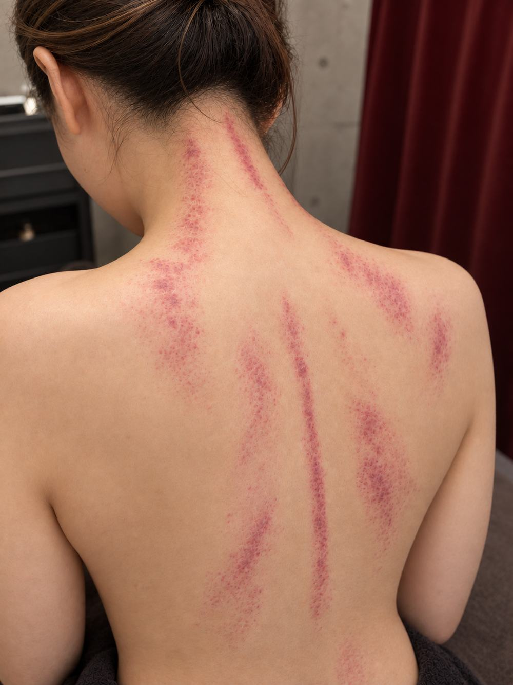

KASSA
台湾式かっさ
トップ ／ 台湾式かっさ
気の巡りを整えて、
体の芯からすっきり。
かっさは、経絡（東洋医学でいう気の通り道）に沿ってプレートで体をこすり、気の詰まりを流すトリートメント。詰まっているところには「痧（シャ）」が現れ、その場所や色で体調をみていきます。
「痧」は打撲によるアザとは違うため、施術後に痛みが残ることはほとんどありません。ただし経絡の詰まりに沿ってこするため、施術中は痛みを感じることもあります。かっさ後は首肩も軽く、むくみもとれて超スッキリ。続けることで体の状態も整っていきます。
FEATURE
台湾式かっさの特長
✦
経絡にアプローチ
東洋医学の考えに基づき、気の詰まりを流して巡りを整えます。
✧
施術中の痛みについて
経絡の詰まりに沿ってこするため、施術中は痛みを感じることもあります。ただし「痧」はアザではないので、施術後に痛みが残ることはほとんどありません。
❖
続けて体質を整える
体の変化を目で見て感じられるのもかっさの醍醐味。継続で状態が整っていきます。
台湾式かっさ メニュー
台湾式かっさ 全身
9,000円
頭からつま先まで全身の経絡に沿ってかっさケア。慢性的な疲労感・むくみ・緊張感が気になる方へ。
台湾式かっさ 全身 & オイルリンパ
12,000円
全身のかっさに揉みほぐしをプラス。爽快感に加えて全身のコリもほぐしたい方に。
台湾式かっさ & オイルリンパ 上半身
6,600円
頭から首肩・背中・腕・デコルテのかっさと背面の揉みほぐし。首肩のコリや頭の重さに。
台湾式かっさ 首肩フェイシャル
6,600円
頭・お顔・首肩のかっさとフェイシャル。お顔のむくみと首肩のコリをすっきり、仕上げは美肌パックで。
再来割引 台湾式かっさは1ヶ月以内10%OFF・2ヶ月以内5%OFF
オイルリンパトリートメントなどのボディメニューは 料金表 をご覧ください。